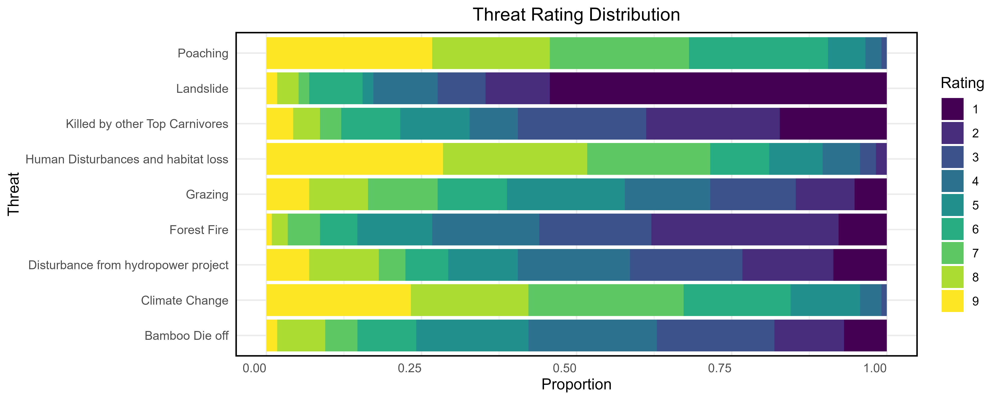

Distribution of Red Panda in Gaurishankar Conservation Area (GCA)
The red panda, endangered in high altitude forests of Asia requires targeted conservation. Species Distribution Modeling (SDM) can effectively support by pinpointing suitable habitats. While research on red panda distribution exists, there is often a lack of localized investigation of red panda distribution and threats, particularly within the GCAP. The study analyzed the red panda’s suitability for its habitat within Gaurishankar Conservation Area (GCA) using Maxent modeling, incorporating data from transect survey and household surveys conducted in Gaurishankar Rural Municipality to assessed threat ranking. Three different habitat suitability scenarios used environmental variables like bioclimatic factors, topography, vegetation, and disturbance. The study identified NDVI and LULC as crucial factors shaping the suitability of areas for red pandas. The GCA region holds an estimated 337.17 km² suitable for red pandas, though this amount varies considerably between administrative areas. About 102.54 km² of potential habitat is located solely within the Gaurishankar Gaunpalika. The analysis concluded that the 30–40˚ slope category, with an area of 125 km², and elevations from 3000 to 3500 meters, covering 105 km², are the most suitable. The largest habitat area, 147 km², was found in needle-leaved open forest, while needle-leaved closed forest had the second largest at 95.1 km².

According to threat analysis, red panda habitats face major risks from human activities like cutting down forests and expanding agriculture, resulting in an average threat score of 8.5. Poaching also presented a notable threat, underscoring the importance of conservation efforts in the region.
